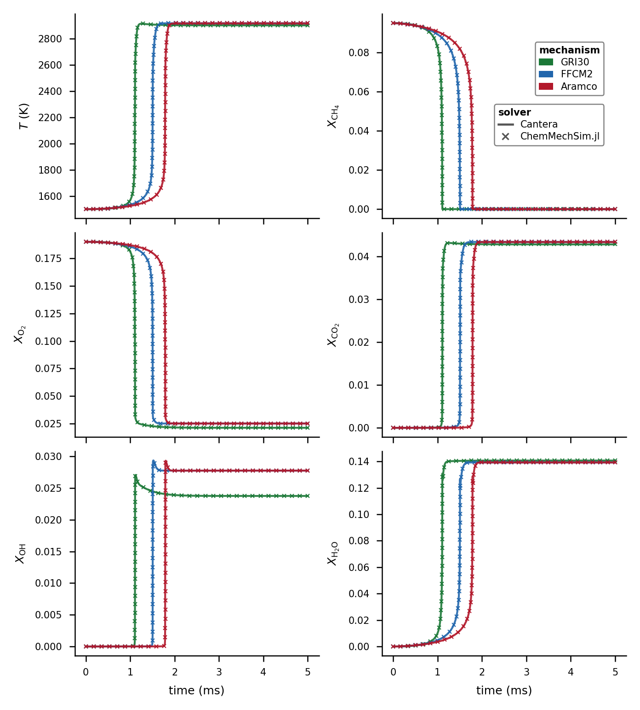
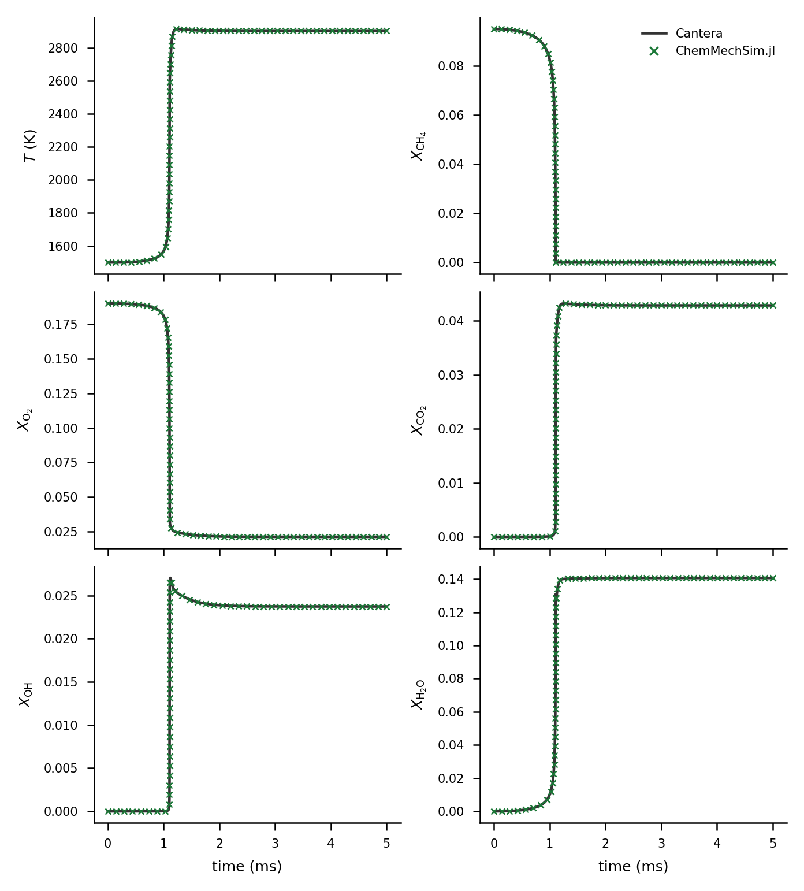

Validation
ChemMechSim is validated against Cantera on real mechanisms (GRI30, H2-O2, FFCM-2, Aramco 3.0). Cantera is not a CI dependency: the Python scripts in examples/validation/ generate reference CSVs that are compared offline with ChemMechSim output. Both sides run at the same tolerances (rtol=1e-8, atol=1e-12) rather than Cantera's stricter defaults, so the comparison isolates the model/implementation, not the integrator tolerance.
Workflow A — per-mechanism ignition delay
Each <mech>_ref.py generates a Cantera const-V (and for H2-O2, const-P) ignition CSV; the matching <mech>_ignition.jl runs ChemMechSim on the same condition, reports the ignition-delay relative difference, and saves a comparison plot.
python3 examples/validation/gri30_ref.py
julia --project=. examples/validation/gri30_ignition.jlMetric: t_ignition = time of maximum |dT/dt| (robust against noise).
| Mechanism | scripts | Δt_ign tolerance |
|---|---|---|
| H2-O2 (const-V / const-P) | h2o2_ignition.{py,jl} | 5% / 8% |
| GRI-30 | gri30_{ref,ignition}.* | 10% |
| FFCM-2 | ffcm2_{ref,ignition}.* | 2% |
| Aramco 3.0 | aramco_{ref,ignition}.* | 2% |
Workflow B — combined-species trajectories
A three-step pipeline over GRI30 / FFCM2 / Aramco producing the figures and error table embedded below:
python3 examples/validation/gen_ref_species.py # 1. Cantera T + 5 species (CH4, O2, CO2, OH, H2O)
julia --project=. examples/validation/export_species.jl # 2. ChemMechSim, same grid
python3 examples/validation/plot_validation.py # 3. figures + validation_errors.txtexport_species.jl uses jac=true + FBDF(linsolve=UMFPACKFactorization()) uniformly across mechanisms — required for Aramco (581 sp) where the default dense Jacobian OOMs.
Combined-species results

GRI-Mech 3.0, same condition as workflow A:

Error table from workflow B (validation_errors.txt; condition: T0 = 1500 K, P0 = 1 atm, phi = 1.0 CH4-air, constant-volume adiabatic, t in [0, 5] ms. Δt_ign in %, max ΔX = max absolute mole-fraction difference over the trajectory for each of CH4, O2, CO2, OH, H2O):
| Mechanism | Δt_ign | max ΔX (CH4 / O2 / CO2 / OH / H2O) |
|---|---|---|
| GRI-Mech 3.0 | 0.065% | 4.3e-3 / 2.0e-2 / 3.4e-3 / 8.6e-3 / 1.3e-2 |
| FFCM 2.0 | 0.168% | 1.6e-2 / 3.9e-2 / 1.7e-2 / 1.7e-2 / 3.1e-2 |
| Aramco 3.0 | 0.333% | 2.2e-2 / 7.2e-2 / 2.5e-2 / 2.4e-2 / 5.2e-2 |
Figures and the error table are produced by the repository scripts above; the committed copies under docs/src/assets/ are their direct output (workflow-B data run of 2026-09-17, figures re-rendered on the current tree — the only src/ changes since are docstring-only plus two commits off these code paths; the GRI30 leg is re-verified on current main: t_ign = 1.108 ms, 0.01% vs Cantera).
PLOG rates
PLOG kf is validated in the test suite (test/test_plog.jl) against test/data/plog_ref_rates.csv, regenerable via test/tools/plog_ref.py with Cantera installed.
Details, per-script notes and artifact inventory: examples/validation/README.md.